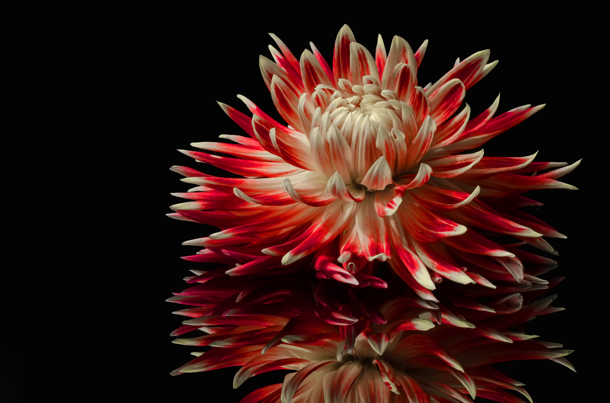

The light of dusk warmly illuminates the red flower in your pale palm. A burnt orange light lingers from a sun
that perpetually
threatens to set as it bleeds into a pink until it reaches the purples and deep blues of a night sky that
beckons for a moon that
will not rise. Gently, you turn the bloom until it fills your calloused hand. Silver starlight seems to cling
against its petals
giving it a soft blue wrapped in a protective crimson.

After studying the bolbaena bloom, you carefully secure the flower. This is the first of many that you will need to collect to complete the blood rite. This is the final challenge. If you cannot collect enough, it would be too risky to attempt a bond with one of the werebeasts in the valley. In many ways, even just attempting such a pact with the appropriate supplies could be a death sentence. But still, you persist.
You haven't given much thought to why, but in your heart of hearts, you know that your place is by Queen Nicnevin's side and your calling is to protect what is left of the Pallid elves. One day, you'dd like to see your people's power restored. You've spent too much time pensively wandering without seeing another bloom, time to focus…